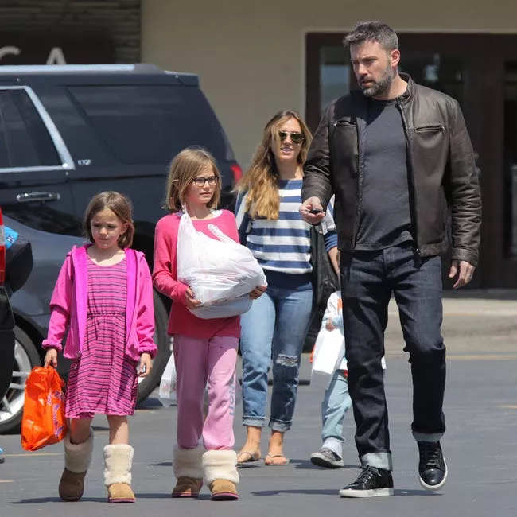

Github Article Header
by 20 Celeb Nannies Who Babysat Other Celebrities
Last Updated - 5 Days Ago

Let’s say you had a babysitting gig back at the afternoon, do you that infant ’d turned into a Hollywood Star? Well, anything is possible in Hollywood. Don’t overlook our favorites #16, #5 and #3!
#20. William H. Macy Babysat Joan Cusack
William H. Macy and Joan Cusack, present co-stars on Shameless, move all of the way back to youth. In fact, Cusack is only one actress Macy babysat (Assess #18). He was helped by some folks since they knew he wanted it, when he began behaving in Chicago.
Photo: Courtesy of ritely.com
As he said to LA Times:
“I’t understood Joan for a longlong moment. I babysat Joan Cusack. That I understood her daddy, and I began behaving in Chicago and that I understood. ”
#19. Michele Bachmann Babysat Gretchen Carlson
Before she started her career in 15, the Congresswoman babysat the TV hostess. When she had reddish hair as a means to assist her loved ones & ldquo; bachmann accepted to work throughout her or his ldquo; rdquo & Cher span;make ends meet with ”.
Photo: Courtesy of ritely.com
It wasn't long until the politician had been hosted on rsquo & Carlson. Being so close, they showed a picture of them. But not all was enjoyable considering that Bachmann herself stated she had been ldquo;a babysitter”.
Now, who did William Macy babysit? Click next to learn.
#18. William H. Macy Babysat Jeremy Piven
William H. Macy babysat Golden Globe winner Jeremy Piven around precisely the exact same time that he babysat Joan Cusak. Though Macy was operating on a drama Dick Cusack and celebrities Byrne Piven, William had to request additional money and work|Though Macy worked on a drama Byrne Piven and Dick Cusack, William had to request additional money and work|Though Macy worked on a drama Dick Cusack and celebrities Byrne Piven, William had to request additional money and work.
Photo: Courtesy of ritely.com
Macy shared his perspective ’s very first years old: it had been obvious that Piven and Cusack had the acting bug at a young age. They had been active members of this Piven Theatre Workshop, he added.
#17. Christopher Hitchens Babysat Olivia Wilde
Olivia Wilde may be regarded as because she had been born and a woman: she & rsquo; s married to a priest, she's been besieged by A-listers like British celebrity, Barack Obama and buddy, Julie Christie and Christopher Hitchens.
Photo: Courtesy of ritely.com
Hitchens said ldquo;together with Olivia you can tell it will be TV or point or the films or nothing, & rdquo; and additional she & ldquo; wasn & rsquo. ”
Next one comes from pairs!
#16. Tamera Mowry-Housley And Tia Mowry Babysat Mary-Kate And Ashley Olsen
It's come to light that each 90&rsquo child dream came true Tamera and Tia Mowry utilized to babysit the Olsen twins Mary-Kate and Ashley.
Photo: Courtesy of ritely.com
As Tia clarified on The Meredith Vieira Show,
My brother [Tahj Mowry, 28], he played with Teddy… Thus, we'd always go and see the set, along with my sister and I -- lots of individuals don’t understand this -- we'd really babysit the Olsen twins.
#15. Michael Bolton Babysat Paula Abdul
Paula Abdul shown onJimmy Kimmel Live Monday that in Age 7 her babysitter was Michael Bolton. At the moment, his girlfriend and teenaged Bolton were buddies with rsquo & Paula;she requested them and s sister.
Photo: Courtesy of ritely.com
Paula recalls Michael not having an attentive babysitter and remembers him spending most of his time worshiping together with all the musicians that lived at the building where she dwelt in L.A.
Next one is really a bonus!
#14. Bonus: Katie Lowes Babysat Connie Briton’s Son
Connie retains the celebrity in high esteem, as stated to Page Six:
“I desired her to be my nanny so poorly and my helper, also. She’s only a person that is phenomenal and that I recall having those discussions. She helped me along with my son, that was only a baby, she explained, ‘I got cast in this series named Scandal. ’
Photo: Courtesy of wireimage.com
Lowes is famous for her role as Quinn Perkins, previously Lindsay Dwyer, at the ABC political play show Scandal made by Shonda Rhimes. Her husband and katie, Adam Shapiro are directors and creators of the IAMA Theater Company.
#13. Bethenny Frankel Babysat Nicky And Paris Hilton
Actual Housewife Bethenny Frankel, of New York, utilized to push Nicky and Paris back when she was rsquo & Kathy Hilton;s helper. Frankel landed the project as a result of her beloved friend Kyle Richards, celebrity of Real Housewives of Beverly Hills.
Photo: Courtesy of ritely.com
Interesting fact: Kathy Hilton fulfilled Bethenny right as soon as they discovered about her relationship rsquo & Kathy;s ex-boyfriend.
Jazz lovers couldn’t another one!
#12. Billie Holiday Babysat Billy Crystal
Unusual Fruit singer could see Crystal’s home and even babysit his son, Billy. Jack Crystal and Milt Gabler, founders of Commodore Records, had strong ties with all the jazz world and have been working with Holiday in the moment.
Photo: Courtesy of ritely.com
Back in Billy Crystal’s HBO Special “700 Sundays”, he remembered his first time in the in 1953: Holiday took youthful Crystal to see Shane, starring Jack Palance. Little did Crystal understand he would later become his buddy and co-star on City Slickers.
#11. Chloe Sevigny Babysat Topher Grace
“She had been a trendy babysitter,” the That ’70s Show celebrity said in Chloe Sevigny, who was able to babysit Topher Grace as a child in Darien, Connecticut.
Photo: Courtesy of ritely.com
In addition, he confessed, “I had such a crush on her behalf. ”
Were you aware athletes babysat back if they were younger? Click next to Learn More!
#10. Wayne Gretzky Babysat Robin Thicke
Where information is provided the randomness of this circumstance marks some moments, and rsquo & Gretzky narrative is different. Wayne&rsquo commerce to the LA Kings by the Edmonton Oilers in 1988 was one of those events in NHL history.
Photo: Courtesy of ritely.com
In the time that the deal went down, Gretzky was in L.A. --housesitting for its Thicke’s and babysitting Robin. The cause of this is that Alan was in Europe because he told Luke Fox of Sportsnet.
#9. Alice Cooper Babysat Keanu Reeves
Working together with rsquo & Reeves;s a designer, mum, Cooper was asked to care for his buddy and the celebrity.
Photo: Courtesy of ritely.com
Imagine having the rock star for a babysitter. Evan Williams, Keanu&rsquo childhood friend remembers: “I recall Keanu and I attempting to shoot on Alice Cooper. He tied up us just like a knot. ”, he stated to people.com.
#8. Zac Posen Babysat Lena Dunham
Not merely did Girls founder develop arty parents, however, she was also treated to free makeovers, courtesy of her own bohemian babysitter Zac Posen.
Photo: Courtesy of ritely.com
“You're the babysitter,” Dunham tweeted into the A-listers in the style designer. “You left me a leather skirt that is frayed; and did my own hair & lsquo; such as a newscaster & rsquo. ”
Another bonus coming up! Next!
#7. Bonus: Mindy Kaling Interned In Conan O’Brien’s Display
It's stated that Conan’s interns go on to do good things, possibly because he understands the deal straight from if he interned as a writer for Saturday Night Live. And such occurred to star in NBC’s hit show The Office,'' Mindy Kaling.
Photo: Courtesy of nbcuni.com
Kaling stated she'd stem Conan in between duties as a intern According to his show. “I couldn’t starstruck I had been. It was my fantasy. However, I was . ”
#6. Laura Dern Babysat Angelina Jolie
Everything you are about to read might look to be a soap opera, but it isn't. While her daddy was off filming, laura sat for Angelina Jolie. & hellip, although nothing seems suspicious;
Photo: Courtesy of ritely.com
Angelina wed rsquo & Laura;s longtime boyfriend Billy Bob Thornton. Dern and t since & rsquo; Jolie harbor.
Our bonus begins click to view it!
#5. Bonus: Kim Kardashian West Styled Serena Williams’ Closet
Tennis champ and the fact superstar ’s friendship began as a company when Williams hired her closet to wash out. As there was a cupboard stylist Kim & rsquo; s gig, serving, she worked amongst others, for Cindy Crawford and Paris Hilton.
Photo: Courtesy of wireimage.com
It’s difficult to recall existence pre-Kardashian invasion. But when revealing Hilton’s cupboard on The Simple Life, Kim confessed:
“Filming was so much pleasure. You know I wish to do. That might be very fun for me personally since it’ natural”
#4. Keifer Sutherland Babysat Gwyneth Paltrow
24 celebrity recalled in a 2009 interview, “I had been operating in a theater along with her mum from the Williamstown Theatre Festival, and I think on a few occasions I had been asked to care for her for an hour or two. ”
Photo: Courtesy of ritely.com
After chuckling, he continued: “'' I think that it was quite funny as it’s incredible how quickly somebody goes from 13 to 18. Because I remember her when Gwyneth began to operate & lsquo; Well, that should be another woman. ’ “
#3. Cher Babysat Anthony Kiedis
Cher, that had been friends with his dad, provided to babysit when Kiedis was in eighth grade. Based on his autobiography, Cher and he enjoyed a nice evening Kiedis went to bed, and Cher got prepared to do exactly the same.
Photo: Courtesy of ritely.com
That night, in the notion of Kiedis being sound asleep, Cher removed her clothing without even discovering Anthony watching from nearby,'' he confessed about the Late Show with James Corden.
#2. Liza Minnelli Babysat Ron Howard
She had to babysit to encourage her profession when Liza was a teen. One was producer Ron Howard with whom she had an friendship and actor.
Photo: Courtesy of ritely.com
The simple fact that Liza accepted her job as Lucille on Arrested Development just occurred because Howard phoned her and asked her to join,'' she informed today.com.
Since you hit 9, # 1 strikes on the galleries!
#1. Andy Warhol Babysat Jade Jagger
Maybe not the one and Warhol could state no when Mick and Bianca Jagger request you to babysit. This Is the Way Jade Jagger was babysat by Factory Studio musicians and designers, such as Andy Warhol, Ross Bleckner and Francesco Clemente.
Photo: Courtesy of ritely.com
As a kid, she urinated on a piece of the art. Do you believe he was angry? She clarified: “I invested a great deal of time throughout the afternoon at Andy’therefore I had my first glass of champagne with him. No wonder that I peed on his base newspaper! However he didn’t he asked me to do it and enjoyed the effect. ”
Leave a Comment:
Search
Advertisement